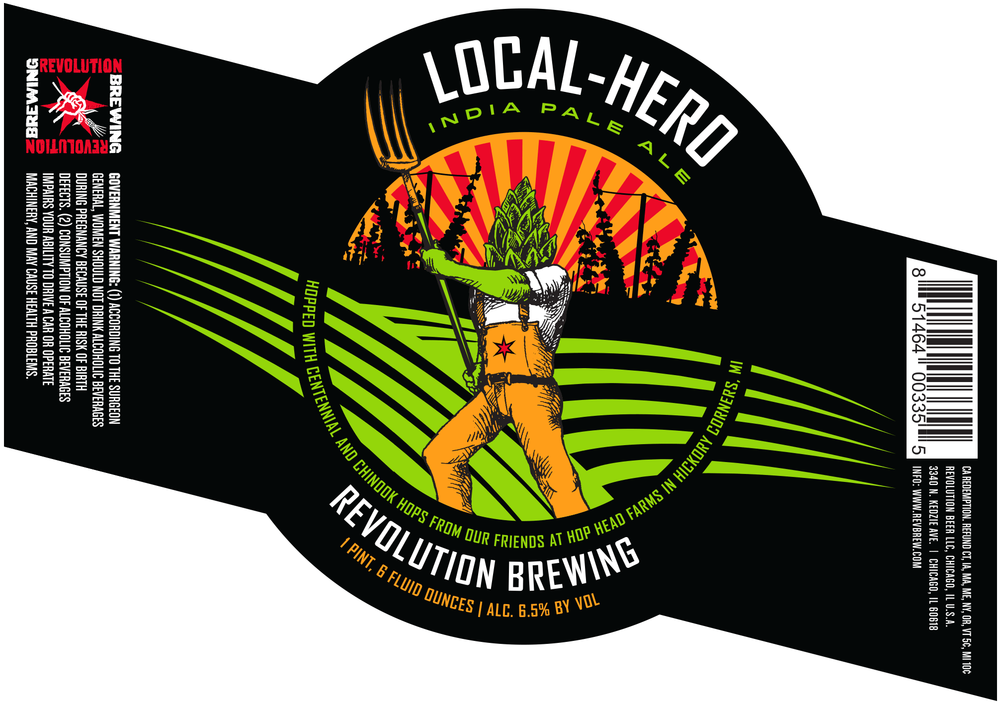
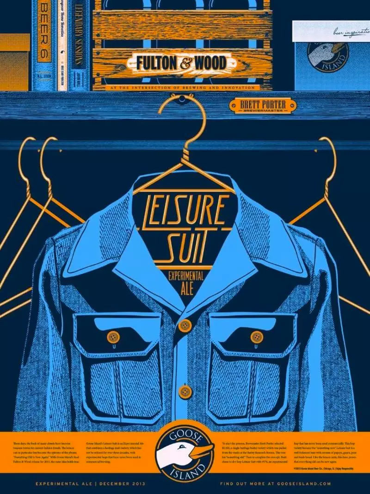
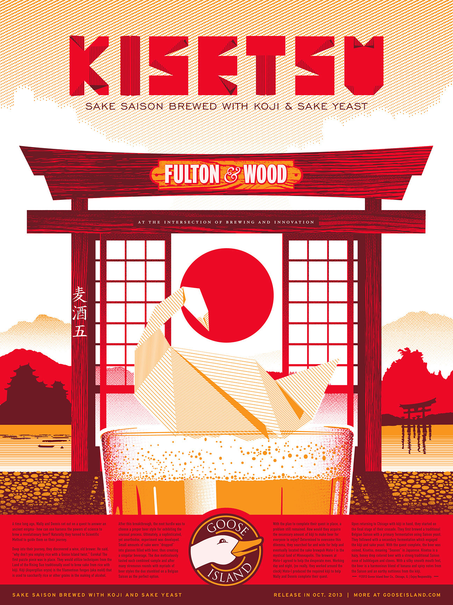

While working for Mighty Few, I had the opportunity to collaborate on the design on labels and cans for Revolution Brewing, as well as several marketing materials.
The biggest challenge of working on Revolution projects is balancing their refined brand. Revolution takes imagery from punk and diy aesthetic as well propaganda materials but keeping them refined and modern looking without ever getting too rough or unrefined.
During my time with Mighty Few, I also was able to assist with the design for Labels, several marketing materials for Goose Island Brewing Co, including Posters for their barrel Aged Beers and T-shirts for their events.
The largest issue to tackle with these projects was bridging the brand and identity that Goose Island had long established and was known for with the look and feel they wanted to move towards. Goose Island in it’s initial days took large inspiration from British beer design in many of it’s labels and iconography. However, with new beers like 312 pushing their image in different, more modern directions as well as staying relevant to a younger audience, Goose wanted to see a newer take on their established look.
